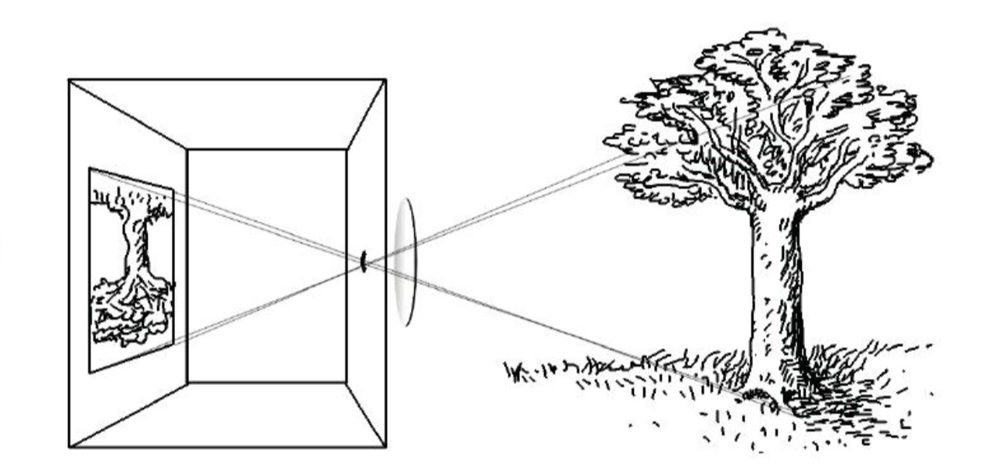
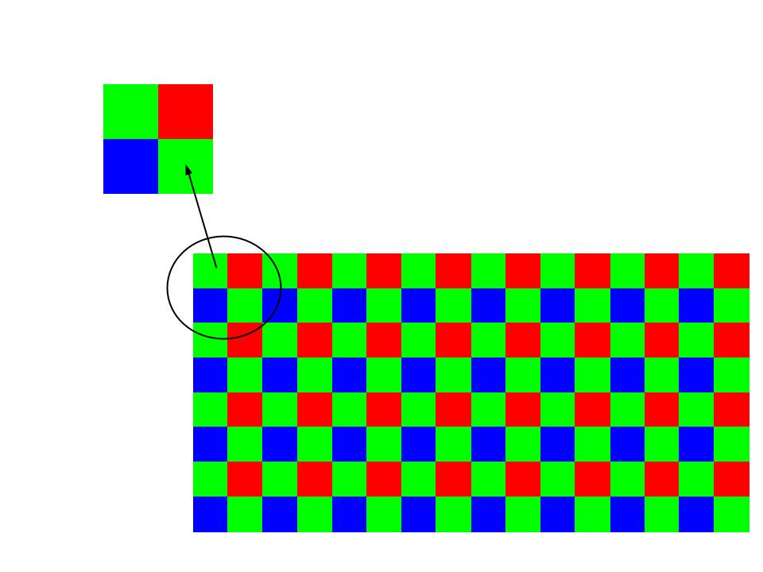

De l'argentique au numérique
Principe de fonctionnement
Un appareil photo, qu'il soit argentique ou numérique, perçoit la lumière de ce qui lui fait face à travers un orifice fin et recueille cette image à l'aide d'un dispositif chimique ou électronique, le capteur. Un système optique, l'objectif, permet d'agir sur la concentration des faisceaux lumineux afin de reproduire une image sur le capteur.
 définition :. . . . . . . . . . . . . . . . . . . . . . . . . . . . . . . . . . . . . . . . . . . . . . . . . . . . . . . . . . . . . . . . . . . . . . . . . . . . . . . . .. . . . . . . . . . . . . . . . . . . . . . . . . . . . . . . . . . . . . . . . ..
Exercice :
Répondre aux questions suivantes en vous aidant de la vidéo ci-dessous.
- Quel âge a la photographie?
- Avant le numérique, comment étaient les appareils photos ?
- A quoi sert le filtre de Bayer ?
- Quels sont les avantages de la photographie numériques ?
- En moyenne, combien y a t-il de pixels dans une image ?
- A quoi sert la compression d'image ?
. . . . . . . . . . . . . . . . . . . . . . . . . . . . . . . . . . . . . . . . .
. . . . . . . . . . . . . . . . . . . . . . . . . . . . . . . . . . . . . . . . .
. . . . . . . . . . . . . . . . . . . . . . . . . . . . . . . . . . . . . . . . .
. . . . . . . . . . . . . . . . . . . . . . . . . . . . . . . . . . . . . . . . .
. . . . . . . . . . . . . . . . . . . . . . . . . . . . . . . . . . . . . . . . .
. . . . . . . . . . . . . . . . . . . . . . . . . . . . . . . . . . . . . . . . .
Les capteurs
Les capteurs photographiques sont des éléments électroniques sensibles à la lumière, ils sont composés de 3 éléments : une microlentille, un filtre dit de Bayer et des photosites qui vont transformer le signal lumineux en une intensité électrique.L&'ensemble de ces signaux électriques va créer des pixels.
Le filtre de Bayer est une grille composé de rouge, vert et bleu, comme vous pouvez le remarquer ci-dessous, il y a deux fois plus de vert que de rouge et de bleu.
L'image et les pixels
Une image possède deux caractéristiques : sa définition et sa résolution.
La définition
. . . . . . . . . . . . . . . . . . . . . . . . . . . . . . . . . . . . . . . . .. . . . . . . . . . . . . . . . . . . . . . . . . . . . . . . . . . . . . . . . .. . . . . . . . . . . . . . . . . . . . . . . . . . . . . . . . . . . . . . . . .. . . . . . . . . . . . . . . . . . . . . . . . . . . . . . . . . . . . . . . . .. . . . . . . . . . . . . . . . . . . . . . . . . . . . . . . . . . . . . . . . .
La résolution :Ce nombre est exprimé en dpi (Dots per inch), et est utilisé pour décrire une image d'un pouce carré (2.54 x 2.54 cm) à 300 dpi, celle-ci contient 300x300 pixels
La résolution d'une image permet donc d'établir le rapport entre la définition en pixel s de l'image et la dimension réelle de sa représentation sur un support physique.
Les pixels
Un pixel est composé de trois parties : une partie rouge, une partie verte et une partie bleue. À chaque pixel on associe donc 3 couleurs : le rouge, le vert et le bleu. On parle du canal rouge, du canal vert et du canal bleu d’un pixel (on parle de système RVB ou RGB en anglais).
La théorie physique de la synthèse additive des couleurs montre que la variation de l’intensité lumineuse de chaque canal permet d’obtenir un très grand nombre de couleurs. La valeur de l’intensité lumineuse associée à chaque canal de chaque pixel d’une image est très souvent comprise entre 0 et 255 (256 valeurs possibles). On codera donc un pixel à l'aide d'un triplet de valeur (par exemple "247,56,98"). La première valeur donnant l'intensité du canal rouge, la deuxième valeur donnant l'intensité du canal vert et la troisième valeur donnant l'intensité du canal bleu.
Exercices
Exercice 1:- La hauteur et la largeur d'une image sont exprimées en nombre de ?
- La résolution d'une image s'exprime en ?
- Un capteur photographique est composé de pixels.
Photosites pixels bits
dpi px cm
vrai faux
- Quels sont les principaux éléments qui composent un appareil photo?
- Le nombre de photosites est-il égal au nombre de pixels ?
- On scanne une photographie de 8.5 pouces sur 11 pouces à 300 de dpi. Quelle est la définition de la photographie scannée ?
- On scanne une photographie de 13 pouces sur 24 pouces à 250 de dpi. Quelle est la définition de la photographie scannée ?
- Une photographie a une définition de 3500x2350px, sa définition est de 150 dpi, quel taille mesure-t-elle en pouce ? en cm ?
- Soit une image de définition 800x533 que l'on imprime sur du papier photo de taille 15x10 (en cm), calculez la résolution de cette image en ppp (rappel 1 pouce = 2,54 cm).
. . . . . . . . . . . . . . . . . . . . . . . . . . . . . . . . . . . . . . . . .. . . . . . . . . . . . . . . . . . . . . . . . . . . . . . . . . . . . . . . . .
. . . . . . . . . . . . . . . . . . . . . . . . . . . . . . . . . . . . . . . . .. . . . . . . . . . . . . . . . . . . . . . . . . . . . . . . . . . . . . . . . .
. . . . . . . . . . . . . . . . . . . . . . . . . . . . . . . . . . . . . . . . .. . . . . . . . . . . . . . . . . . . . . . . . . . . . . . . . . . . . . . . . .
. . . . . . . . . . . . . . . . . . . . . . . . . . . . . . . . . . . . . . . . .. . . . . . . . . . . . . . . . . . . . . . . . . . . . . . . . . . . . . . . . .
. . . . . . . . . . . . . . . . . . . . . . . . . . . . . . . . . . . . . . . . .. . . . . . . . . . . . . . . . . . . . . . . . . . . . . . . . . . . . . . . . .
. . . . . . . . . . . . . . . . . . . . . . . . . . . . . . . . . . . . . . . . .. . . . . . . . . . . . . . . . . . . . . . . . . . . . . . . . . . . . . . . . .
À l'aide de l'application proposée sur ce site, faites varier les canaux rouge, vert et bleu (à l'aide des boutons + et des boutons -) afin d'obtenir différentes couleurs.
- Comment obtenir du rouge ?
- Comment obtenir du blanc ?
- Comment obtenir du noir ?
- Comment obtenir du jaune ?
- Que se passe-t-il quand les trois canaux ont la même valeur (par exemple 125,125,125) ?
. . . . . . . . . . . . . . . . . . . . . . . . . . . . . . . . . . . . . . . . .
. . . . . . . . . . . . . . . . . . . . . . . . . . . . . . . . . . . . . . . . .
. . . . . . . . . . . . . . . . . . . . . . . . . . . . . . . . . . . . . . . . .
. . . . . . . . . . . . . . . . . . . . . . . . . . . . . . . . . . . . . . . . .
JHermilier